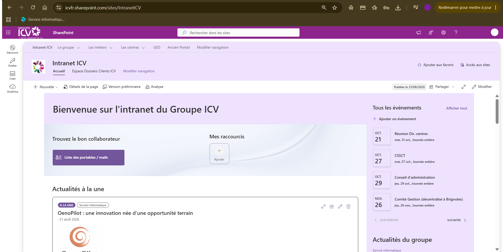

Refonte de l'intranet sur Microsoft 365
Le Groupe ICV est le premier acteur français du conseil et de l'analyse des vins. L'objectif de ce stage était de refondre leur intranet documentaire, initialement hébergé sur un ancien SharePoint 2013 interne, vers un écosystème moderne, collaboratif et sécurisé basé sur Microsoft 365.
Le système précédent souffrait d'un cloisonnement documentaire important (plusieurs plateformes non connectées), d'une recherche inefficace et de l'absence d'un annuaire d'entreprise unifié. La solution a nécessité de consolider 4 systèmes hétérogènes en une architecture d'information structurée regroupant 29 sites.
Un des défis majeurs a été d'adopter les bons outils pour les bonnes tâches, comme l'abandon d'un flux Power Automate défaillant au profit d'un script PowerShell robuste. Ce changement a permis de gérer l'automatisation et la synchronisation de plus de 16 190 dossiers clients tout en respectant des contraintes de sécurité et de licences strictes.
Développement d'un composant React (SPFx) connecté à l'API Microsoft Graph pour permettre aux utilisateurs de rechercher facilement tous les collaborateurs de l'entreprise.
Création d'un système d'actualités centralisé capable d'agréger efficacement le contenu des 29 sites de l'intranet, en intégrant une gestion fine des permissions (lecture/écriture).
Mise en place de la synchronisation quotidienne de 16 190 clients depuis la base métier vers SharePoint, avec gestion automatique des droits complexes et de l'arborescence.
Interface React développée pour le service Recherche & Développement, simplifiant la saisie des projets, couplée à une génération automatisée de documents Word (OOXML).
Définition d'un modèle de métadonnées transversal, d'un cycle de vie pour les documents, et implémentation d'une authentification applicative sécurisée par certificat (Entra ID).
React, TypeScript, intégration profonde avec l'écosystème Microsoft 365
Scripting PowerShell, gestion et optimisation des limites d'API (Throttling)
Entra ID, gestion de permissions complexes sur SharePoint
Conception d'un système d'information et d'un écosystème documentaire unifié
Animation d'ateliers avec les utilisateurs, conduite et accompagnement du changement
La migration a permis à l'ensemble des collaborateurs du Groupe ICV de bénéficier d'une base documentaire moderne, pérenne et hautement sécurisée. La méthode de déploiement itérative avec les équipes métiers a garanti une excellente adoption des nouveaux outils.
Ce stage m'a offert l'opportunité de gérer des problématiques complexes de production à grande échelle, de manipuler des données réelles, et de prendre des décisions d'architecture structurantes documentées et assumées.